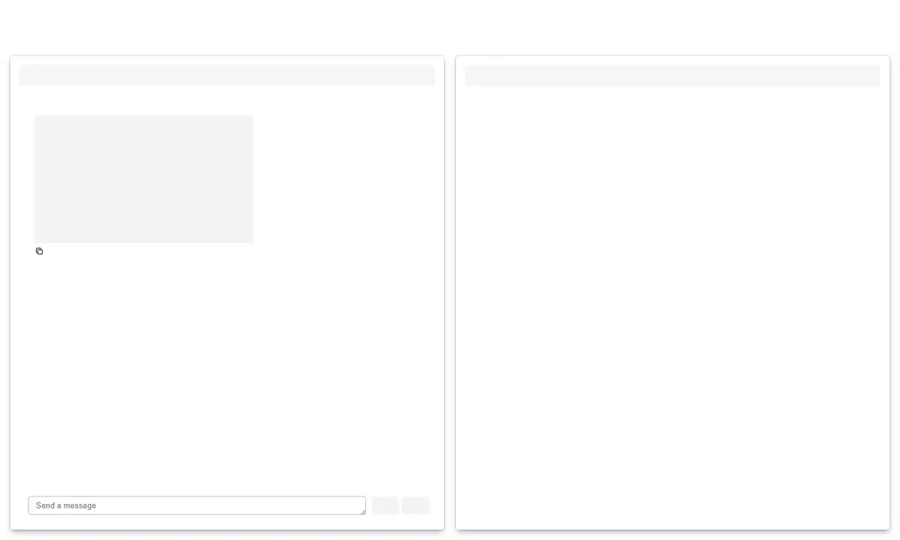

AI Chat Panel¶

The AI chat panel adds an LLM-powered chat interface to any Panel application or Panelini dashboard. It supports multiple providers, tool execution, streaming responses, and a live preview pane.
Overview¶
graph TB
subgraph ai [" AI Chat Panel "]
direction TB
frontend(["AiChat"])
backend(["AiBackend"])
iface(["AiInterface"])
config(["Config Loader"])
tools(["Tools"])
end
subgraph panelini [" Panelini "]
sidebar(["Left Sidebar"])
main(["Main Content"])
end
subgraph providers [" LLM Providers "]
anthropic(["Anthropic"])
azure(["Azure OpenAI"])
end
frontend -- "sidebar_objects" --> sidebar
frontend -- "main_objects" --> main
frontend --> backend
backend --> iface
backend --> config
backend --> tools
iface --> anthropic
iface --> azure
classDef aiNode fill:#0d7377,stroke:#095c5f,color:#ffffff
classDef paneliniNode fill:#1e293b,stroke:#334155,color:#f8fafc
classDef providerNode fill:#6366f1,stroke:#4f46e5,color:#ffffff
class frontend,backend,iface,config,tools aiNode
class sidebar,main paneliniNode
class anthropic,azure providerNode
The panel is structured in layers:
AiChat – UI widgets (chat interface, sidebar controls, preview pane)
AiBackend – Business logic (provider management, tool execution, message routing)
AiInterface – Provider-agnostic LLM wrapper (LangChain-based)
Config – YAML configuration with environment variable resolution
Tools – Extensible LangChain tool system
Installation¶
The AI chat panel is an optional extra:
uv add panelini[ai]
or with pip:
pip install panelini[ai]
This installs the required dependencies: langchain, langchain-anthropic, langchain-openai, pyyaml, and python-dotenv.
Quick Start¶
from panelini import Panelini
app = Panelini(title="My AI App", use_ai=True)
app.servable()
That’s it. The use_ai=True flag adds the chat interface to the main area and provider/model controls to the left sidebar.
Standalone Usage (without Panelini)¶
import panel as pn
from panelini.panels.ai import AiChat
chat = AiChat(
system_message="You are a helpful assistant.",
)
# Use sidebar_objects and main_objects in any Panel layout
app = pn.Row(*chat.main_objects)
app.servable()
Configuration Parameters¶
app = Panelini(
title="My AI App",
use_ai=True,
ai_system_message="You are a data analysis assistant.",
ai_welcome_message="Hello! How can I help you today?",
ai_config_path="/path/to/config.yml",
)
Parameter |
Type |
Description |
|---|---|---|
|
|
Enable the AI chat panel (default: |
|
|
System message for the AI backend (default: |
|
|
Initial greeting shown in the chat. Uses a built-in default if |
|
|
Path to a custom |
Provider Configuration¶
Providers and models are defined in a YAML configuration file. The panel searches for configuration in this order:
PANELINI_AI_CONFIG_PATHenvironment variableWalk upward from the working directory looking for
config.ymlorconfig.yamlFall back to the bundled default configuration
Configuration Format¶
providers:
anthropic:
display_name: "Anthropic"
client_type: "anthropic"
env_vars:
api_key: "${ANTHROPIC_API_KEY}"
endpoint: "${ANTHROPIC_ENDPOINT}"
models:
- name: "Claude Sonnet 4.5"
value: "anthropic/claude-sonnet-4-5"
- name: "Claude Haiku 4.5"
value: "anthropic/claude-haiku-4-5"
azure_openai:
display_name: "Azure OpenAI"
client_type: "azure_openai"
env_vars:
api_key: "${AZURE_OPENAI_API_KEY}"
endpoint: "${AZURE_OPENAI_ENDPOINT}"
api_version: "${AZURE_OPENAI_API_VERSION}"
models:
- name: "GPT-4o"
value: "azure_openai/gpt-4o-2024-11-20"
Model values use the LiteLLM naming convention: provider_prefix/model-id. The prefix is stripped before passing the model name to LangChain. When client_type is omitted, it is derived directly from the first model’s prefix. Bare model names (without a prefix) still work when client_type is set explicitly.
Environment variables referenced with ${VAR_NAME} are resolved at load time. A ValueError is raised if a referenced variable is not set.
Supported Providers¶
Provider |
|
Required Environment Variables |
|---|---|---|
Anthropic |
|
|
Azure OpenAI |
|
|
UI Layout¶
When use_ai=True, the panel injects two areas into the Panelini dashboard:
Main Content¶
The main area receives a two-column layout:
Chat (left) – The chat interface with streaming responses
Preview (right) – A markdown preview pane updated by the
update_previewtool
Tools¶
The panel includes a tool system based on LangChain’s BaseTool. Tools are toggled via sidebar checkboxes.
Built-in Tools¶
Tool |
Description |
|---|---|
|
Returns the current date and time with optional timezone support. Enabled by default. |
|
Renders markdown content in the preview pane. Supports headers, tables, code blocks, and images. |
Streaming vs Tool Mode¶
No tools selected – Responses stream token-by-token inside a collapsible
<details>block, then expand when complete.Tools selected – The model runs a tool execution loop (up to 10 iterations). The final text response is displayed after all tool calls complete.
Adding Custom Tools¶
Custom tools can be passed directly to AiChat via the tools parameter. They appear as additional checkboxes in the sidebar alongside the built-in tools:
from panelini.panels.ai import AiChat
chat = AiChat(tools=[MyTool()])
To create a custom tool, subclass LangChain’s BaseTool:
from langchain_core.tools import BaseTool
from pydantic import BaseModel, Field
class MyToolInput(BaseModel):
query: str = Field(description="The search query")
class MyTool(BaseTool):
name: str = "my_tool"
description: str = "Describe what this tool does."
args_schema: type[BaseModel] = MyToolInput
def _run(self, query: str) -> str:
return f"Result for: {query}"
async def _arun(self, query: str) -> str:
return self._run(query=query)
See examples/panels/ai/ai_chat_custom_tool.py for a complete working example with a LocalStorage tool.
Module Structure¶
panelini/panels/ai/
├── __init__.py
├── frontend.py # UI layer (AiChat class)
├── backend.py # Business logic (AiBackend class)
├── default_config.yml # Bundled default provider config
├── tools/
│ ├── __init__.py
│ └── basic_tools.py # Built-in tools
└── utils/
├── __init__.py
├── ai_interface.py # Provider-agnostic LLM interface
└── config.py # YAML config loader
API Reference¶
AiChat¶
Standalone AI chat panel. Can be used independently in any Panel app or integrated into Panelini. Exposes widget lists for integration.
Property / Method |
Description |
|---|---|
|
Constructor. All parameters are optional. Pass custom |
|
Property returning a list of Panel viewables for the sidebar. |
|
Property returning a list of Panel viewables for the main area. |
AiBackend¶
Business logic layer managing providers, models, tools, and message processing.
Method |
Description |
|---|---|
|
Constructor. Loads config and creates the initial AI interface. |
|
Returns |
|
Returns |
|
Switch provider, reset model, clear history. |
|
Switch model, preserve history. |
|
Update sampling temperature, preserve history. |
|
Update available tools, preserve history. |
|
Process a user message. Returns |
|
Async generator yielding response token chunks. |
|
Clear conversation history. |
|
Export chat to a JSON-serializable dict. |
|
Restore conversation from exported JSON. |
AiInterface¶
Low-level provider-agnostic LLM interface built on LangChain.
Method |
Description |
|---|---|
|
Constructor. Initializes the LLM client and binds tools. |
|
Get a response (streaming or non-streaming). |
|
Get a response that may include tool calls. |
|
Dynamically add a tool to the interface. |
|
Clear conversation history. |
Configuration Classes¶
Class / Function |
Description |
|---|---|
|
Top-level config dataclass. Contains a |
|
Frozen dataclass for a provider (key, display_name, client_type, env_vars, models). |
|
Frozen dataclass for a model (name, value). |
|
Load and validate a YAML config file. Auto-discovers if path is |
Data Flow¶
sequenceDiagram
participant User as User
participant Chat as ChatInterface
participant FE as AiChat
participant BE as AiBackend
participant AI as AiInterface
participant LLM as LLM Provider
User->>Chat: Type message
Chat->>FE: _handle_message()
FE->>BE: process_message() or stream_message()
BE->>AI: get_response() or get_response_with_tools()
AI->>LLM: ainvoke() / astream()
LLM-->>AI: Response / chunks
AI-->>BE: Text + tool_calls
BE->>BE: Execute tools (if any)
BE-->>FE: {"response", "preview_updates"}
FE-->>Chat: Yield response
Chat-->>User: Display message